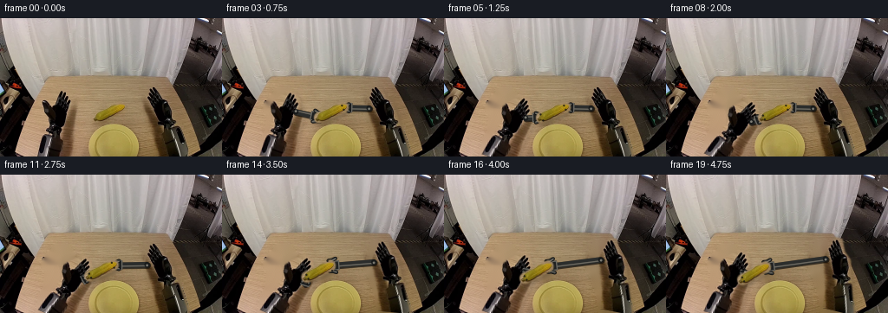
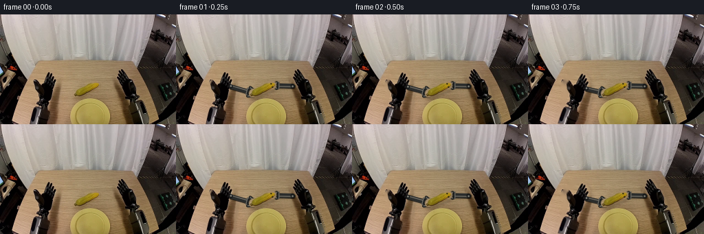

CODING AGENTS AS PIXEL WORLD MODELS
traex/GPT-5.6-Sol · common50_0040
点击播放 · 原生 RGB 像素
逐轮保存的候选
回放视频、检查图与代码变化。
每份候选均可单独播放。实际图片检查记录在下方工具轨迹中。
候选 01播放与检查图
点击播放 · 原生 RGB 像素


展开代码变化
--- 上一保存版本
+++ 本次保存版本
@@ -0,0 +1,294 @@
+"""Generate a 5-second rigid robotic corn handover from the supplied first frame.
+
+The animation is deliberately image based: both dark robot forearms are cut from the
+source photograph and rigidly rotated about fixed lower pivots. The corn's actual
+pixels are isolated into a small rigid sprite. Areas revealed by motion are restored
+from the surrounding wooden table with local inpainting. Only the tiny jaw links are
+rendered geometrically, so the original lighting and photographic texture dominate.
+"""
+from pathlib import Path
+import math
+import cv2
+import numpy as np
+from PIL import Image
+import artifact_io
+
+ROOT = Path(__file__).resolve().parent
+W, H = 256, 160
+
+
+def smoothstep(x):
+ x = float(np.clip(x, 0.0, 1.0))
+ return x * x * (3.0 - 2.0 * x)
+
+
+def polygon_mask(points, feather=1.15):
+ m = np.zeros((H, W), np.uint8)
+ cv2.fillPoly(m, [np.asarray(points, np.int32)], 255, lineType=cv2.LINE_AA)
+ if feather:
+ m = cv2.GaussianBlur(m, (0, 0), feather)
+ return m.astype(np.float32) / 255.0
+
+
+def affine_about(pivot, angle_degrees):
+ return cv2.getRotationMatrix2D(tuple(map(float, pivot)), float(angle_degrees), 1.0)
+
+
+def transform_point(M, point):
+ return np.asarray(M, np.float32)[:, :2] @ np.asarray(point, np.float32) + np.asarray(M, np.float32)[:, 2]
+
+
+def composite(dst, src, alpha):
+ a = alpha[..., None].astype(np.float32)
+ return np.clip(dst.astype(np.float32) * (1.0 - a) + src.astype(np.float32) * a, 0, 255).astype(np.uint8)
+
+
+def warp_layer(image, alpha, M):
+ wi = cv2.warpAffine(image, M, (W, H), flags=cv2.INTER_CUBIC,
+ borderMode=cv2.BORDER_CONSTANT, borderValue=(0, 0, 0))
+ wa = cv2.warpAffine(alpha, M, (W, H), flags=cv2.INTER_LINEAR,
+ borderMode=cv2.BORDER_CONSTANT, borderValue=0)
+ return wi, np.clip(wa, 0.0, 1.0)
+
+
+def capsule_mask(shape, a, b, radius, blur=0.75):
+ """Antialiased capsule mask, useful for rigid object and soft contact shadows."""
+ hh, ww = shape
+ scale = 4
+ m = np.zeros((hh * scale, ww * scale), np.uint8)
+ aa = tuple(np.round(np.asarray(a) * scale).astype(int))
+ bb = tuple(np.round(np.asarray(b) * scale).astype(int))
+ cv2.line(m, aa, bb, 255, max(1, int(radius * 2 * scale)), cv2.LINE_AA)
+ m = cv2.resize(m, (ww, hh), interpolation=cv2.INTER_AREA)
+ if blur:
+ m = cv2.GaussianBlur(m, (0, 0), blur)
+ return m.astype(np.float32) / 255.0
+
+
+def darken_with_mask(frame, mask, strength):
+ f = frame.astype(np.float32)
+ a = np.clip(mask * strength, 0, 0.75)[..., None]
+ # Slightly warm, diffuse contact shadow on the wooden work surface.
+ shadow = f * np.array([0.48, 0.51, 0.54], np.float32)
+ return np.clip(f * (1 - a) + shadow * a, 0, 255).astype(np.uint8)
+
+
+def draw_robot_gripper(frame, base, contact, opening, handed):
+ """Draw a compact, rigid parallel-jaw tool between wrist and corn contact.
+
+ `opening` is the jaw separation in pixels. Geometry is rendered at 4x and then
+ area downsampled for subpixel-stable motion and realistic small highlights.
+ """
+ S = 4
+ canvas = np.zeros((H * S, W * S, 4), np.uint8)
+ b = np.asarray(base, np.float32)
+ c = np.asarray(contact, np.float32)
+ v = c - b
+ L = float(np.linalg.norm(v))
+ if L < 1:
+ return frame
+ u = v / L
+ n = np.array([-u[1], u[0]], np.float32)
+ # The wrist stops just short of the object; jaws wrap around its two sides.
+ palm = c - u * 7.2
+ shaft_end = palm - u * 1.5
+
+ def P(q):
+ return tuple(np.round(np.asarray(q) * S).astype(int))
+
+ # Soft black under-edge gives the small assembly photographic depth.
+ cv2.line(canvas, P(b + np.array([0.8, 1.0])), P(shaft_end + np.array([0.8, 1.0])),
+ (7, 8, 8, 170), int(7.0 * S), cv2.LINE_AA)
+ cv2.line(canvas, P(b), P(shaft_end), (43, 45, 44, 255), int(6.0 * S), cv2.LINE_AA)
+ cv2.line(canvas, P(b - n * 1.2), P(shaft_end - n * 1.2),
+ (100, 101, 97, 210), max(1, int(1.15 * S)), cv2.LINE_AA)
+
+ # Rectangular wrist collar.
+ collar = np.array([palm - u * 3.2 - n * 5.0, palm + u * 2.1 - n * 5.0,
+ palm + u * 2.1 + n * 5.0, palm - u * 3.2 + n * 5.0])
+ cv2.fillConvexPoly(canvas, np.round(collar * S).astype(np.int32), (31, 33, 33, 255), cv2.LINE_AA)
+ cv2.polylines(canvas, [np.round(collar * S).astype(np.int32)], True,
+ (105, 106, 101, 235), max(1, int(0.75 * S)), cv2.LINE_AA)
+
+ sep = float(opening) / 2.0
+ # Two rigid fingers. Their inner ends approach the upper/lower sides of the cob.
+ for sign in (-1.0, 1.0):
+ root = palm + n * sign * (sep + 1.7)
+ bend = c - u * 3.0 + n * sign * sep
+ tip = c + u * 1.3 + n * sign * sep
+ # dark outline + cool metal body + a narrow upper highlight
+ pts = np.array([root, bend, tip], np.float32)
+ cv2.polylines(canvas, [np.round(pts * S).astype(np.int32)], False,
+ (10, 11, 11, 255), int(3.8 * S), cv2.LINE_AA)
+ cv2.polylines(canvas, [np.round(pts * S).astype(np.int32)], False,
+ (59, 61, 59, 255), int(2.25 * S), cv2.LINE_AA)
+ hi = pts - n * sign * 0.45
+ cv2.polylines(canvas, [np.round(hi * S).astype(np.int32)], False,
+ (132, 132, 125, 215), max(1, int(0.55 * S)), cv2.LINE_AA)
+ cv2.circle(canvas, P(tip), int(1.55 * S), (19, 20, 19, 255), -1, cv2.LINE_AA)
+ # Small wrist pivot cap.
+ cv2.circle(canvas, P(b), int(3.2 * S), (24, 26, 26, 255), -1, cv2.LINE_AA)
+ cv2.circle(canvas, P(b - n * 0.7), int(1.35 * S), (127, 128, 122, 225), -1, cv2.LINE_AA)
+
+ layer = cv2.resize(canvas, (W, H), interpolation=cv2.INTER_AREA)
+ a = layer[:, :, 3:4].astype(np.float32) / 255.0
+ rgb = layer[:, :, :3].astype(np.float32)
+ return np.clip(frame.astype(np.float32) * (1 - a) + rgb * a, 0, 255).astype(np.uint8)
+
+
+def main():
+ src = np.asarray(Image.open(ROOT / "first_frame.png").convert("RGB"), dtype=np.uint8)
+ assert src.shape == (H, W, 3)
+
+ # Source arm silhouettes. The polygons follow the visible dark forearms and keep
+ # the original material grain, glints and shading. Their lower pivots stay fixed.
+ left_poly = [(67, 81), (76, 82), (83, 92), (88, 110), (85, 132),
+ (83, 151), (80, 159), (43, 159), (46, 143), (51, 130),
+ (54, 113), (49, 103), (55, 93)]
+ right_poly = [(174, 77), (182, 77), (188, 90), (197, 98), (202, 114),
+ (207, 132), (216, 159), (180, 159), (178, 140), (173, 123),
+ (166, 108), (169, 95)]
+ left_alpha = polygon_mask(left_poly, 0.75)
+ right_alpha = polygon_mask(right_poly, 0.75)
+
+ # Isolate the real corn texture. Its diagonal capsule runs up-right from the
+ # broad base at (111,116) toward (140,103).
+ corn_alpha = capsule_mask((H, W), (112.5, 115.0), (139.5, 103.0), 6.5, 0.6)
+ # Constrain its feathered edge with color evidence; keep a full opaque core so
+ # darker kernels are retained.
+ rr, gg, bb = src[:, :, 0].astype(float), src[:, :, 1].astype(float), src[:, :, 2].astype(float)
+ gold = np.clip(((rr + gg) * 0.5 - bb - 23.0) / 27.0, 0, 1)
+ core = capsule_mask((H, W), (113.5, 114.5), (139.0, 103.2), 4.8, 0.45)
+ corn_alpha *= np.maximum(0.58 + 0.42 * gold, core)
+ corn_alpha[corn_alpha < 0.025] = 0
+
+ # Clean plate/table image used under moving actors. Telea restoration is local;
+ # most of these areas are immediately covered again by the warped source arms.
+ erase = np.maximum.reduce([left_alpha, right_alpha, corn_alpha])
+ erase_u8 = (erase > 0.08).astype(np.uint8) * 255
+ erase_u8 = cv2.dilate(erase_u8, np.ones((3, 3), np.uint8), iterations=1)
+ background = cv2.inpaint(src, erase_u8, 4.0, cv2.INPAINT_TELEA)
+
+ frames = []
+ original_corn_center = np.array([126.0, 109.0], np.float32)
+ corn_anchor = original_corn_center.copy()
+
+ for i in range(20):
+ if i == 0:
+ # Contract requirement: first image must be exactly the supplied bytes.
+ frames.append(src.copy())
+ continue
+
+ # Left robot approaches by rotating its rigid source forearm around the base,
+ # stabilizes during shared grasp, then withdraws carrying the cob.
+ if i <= 7:
+ la = -23.0 * smoothstep((i - 1) / 6.0)
+ elif i <= 13:
+ la = -23.0
+ else:
+ la = -23.0 + 10.5 * smoothstep((i - 13) / 6.0)
+
+ # The right arm remains stable through transfer and only withdraws after its
+ # fingers are open, eliminating implausible sliding while it still bears load.
+ if i <= 11:
+ ra = 0.0
+ else:
+ ra = -14.0 * smoothstep((i - 11) / 7.0)
+
+ # Object translation begins only once both grippers overlap (frames 8-9).
+ # It remains rigid, with only a subtle wrist-induced change in orientation.
+ if i <= 8:
+ center = original_corn_center.copy()
+ corn_rot = 0.0
+ elif i <= 13:
+ q = smoothstep((i - 8) / 5.0)
+ center = original_corn_center * (1 - q) + np.array([112.0, 111.5]) * q
+ corn_rot = 2.5 * q
+ else:
+ q = smoothstep((i - 13) / 6.0)
+ center = np.array([112.0, 111.5]) * (1 - q) + np.array([101.5, 114.0]) * q
+ corn_rot = 2.5 + 3.0 * q
+
+ LM = affine_about((52.0, 159.0), la)
+ RM = affine_about((204.0, 159.0), ra)
+ # Corn transform: rotate rigidly around original center, then translate.
+ CM = affine_about(tuple(original_corn_center), corn_rot)
+ CM[:, 2] += center - original_corn_center
+
+ out = background.copy()
+
+ # Diffuse shadows precede the actors, grounding their motion on the table.
+ lshadow, _ = warp_layer(src, left_alpha, LM)
+ rshadow, _ = warp_layer(src, right_alpha, RM)
+ # Alpha-only shadows, displaced down-right in the direction of source light.
+ LS = LM.copy(); LS[:, 2] += np.array([2.0, 3.0])
+ RS = RM.copy(); RS[:, 2] += np.array([2.0, 3.0])
+ ls = cv2.warpAffine(left_alpha, LS, (W, H), flags=cv2.INTER_LINEAR)
+ rs = cv2.warpAffine(right_alpha, RS, (W, H), flags=cv2.INTER_LINEAR)
+ ls = cv2.GaussianBlur(ls, (0, 0), 2.3)
+ rs = cv2.GaussianBlur(rs, (0, 0), 2.3)
+ out = darken_with_mask(out, np.maximum(ls, rs), 0.22)
+
+ # Composite the rigid photographic arm layers.
+ li, lm = warp_layer(src, left_alpha, LM)
+ ri, rm = warp_layer(src, right_alpha, RM)
+ out = composite(out, li, lm)
+ out = composite(out, ri, rm)
+
+ # Wrist locations on the inward edges of the source forearms.
+ left_base = transform_point(LM, (79.5, 105.0))
+ right_base = transform_point(RM, (169.5, 104.0))
+ # Contacts are fixed points on either end of the moving cob, transformed
+ # together with it; jaws therefore never slip across the held object.
+ left_contact = transform_point(CM, (112.8, 114.7))
+ right_contact = transform_point(CM, (139.3, 103.3))
+
+ # Jaw schedules: right owns the cob initially; both hold briefly; then left
+ # owns it and right opens before withdrawing.
+ left_open = 10.0 - 5.0 * smoothstep((i - 3) / 4.0)
+ right_open = 5.1 + 7.5 * smoothstep((i - 10) / 4.0)
+
+ # Draw wrist bodies behind the object. A second compact tip pass after the
+ # corn supplies the visible occlusion cue of fingers wrapping around it.
+ out = draw_robot_gripper(out, left_base, left_contact, left_open, "left")
+ out = draw_robot_gripper(out, right_base, right_contact, right_open, "right")
+
+ # Moving corn shadow and actual source-texture corn sprite.
+ corn_img, ca = warp_layer(src, corn_alpha, CM)
+ CS = CM.copy(); CS[:, 2] += np.array([1.5, 3.2])
+ csh = cv2.warpAffine(corn_alpha, CS, (W, H), flags=cv2.INTER_LINEAR)
+ csh = cv2.GaussianBlur(csh, (0, 0), 1.35)
+ out = darken_with_mask(out, csh, 0.25)
+ out = composite(out, corn_img, ca)
+
+ # Dark contact pads over the cob edges make ownership/release readable while
+ # retaining nearly all original corn pixels.
+ pad = np.zeros((H * 4, W * 4, 4), np.uint8)
+ for contact, opn, active in ((left_contact, left_open, i >= 4),
+ (right_contact, right_open, i <= 14)):
+ if not active:
+ continue
+ # Pads separate as opening increases; when closed they touch both edges.
+ v = center - contact
+ if np.linalg.norm(v) < 0.5:
+ v = np.array([1.0, 0.0])
+ u = v / np.linalg.norm(v); n = np.array([-u[1], u[0]])
+ sep = opn / 2.0
+ for sign in (-1, 1):
+ p = contact + n * sign * sep
+ cv2.circle(pad, tuple(np.round(p * 4).astype(int)), 4,
+ (20, 21, 20, 210), -1, cv2.LINE_AA)
+ pad = cv2.resize(pad, (W, H), interpolation=cv2.INTER_AREA)
+ pa = pad[:, :, 3:4].astype(np.float32) / 255.0
+ out = np.clip(out.astype(float) * (1 - pa) + pad[:, :, :3].astype(float) * pa, 0, 255).astype(np.uint8)
+
+ frames.append(out)
+
+ frames = np.stack(frames).astype(np.uint8)
+ assert frames.shape == (20, H, W, 3)
+ assert np.array_equal(frames[0], src)
+ artifact_io.save(frames, ROOT)
+
+
+if __name__ == "__main__":
+ main()
可观测工具轨迹
实际执行的命令与返回图片。
命令 1exit 0
/bin/bash -lc "cat GENERATION_RULES.md && printf '\\n--- PROMPT ---\\n' && cat prompt.txt"
命令 2exit 1
/bin/bash -lc "find . -maxdepth 2 -type f -printf '%p\\n' | sort && printf '\\n--- TOOLS ---\\n' && command -v ffmpeg && command -v python3 && python3 - <<'PY'
from PIL import Image
im=Image.open('first_frame.png')
print(im.mode, im.size)
print('bbox',im.getbbox())
PY"命令 3exit 0
/bin/bash -lc "cat task_spec.json && printf '\\n--- artifact_io.py ---\\n' && sed -n '1,240p' artifact_io.py"
命令 4exit 0
/bin/bash -lc "python3 - <<'PY'
from PIL import Image
import numpy as np
im=np.array(Image.open('first_frame.png').convert('RGB'))
print('shape',im.shape,'dtype',im.dtype,'range',im.min(),im.max())
# sample grid average 16x10 bins
chars=' .:-=+*#%@'
g=im.mean(2)
for by in range(10):
row=''
for bx in range(16):
a=g[by*16:(by+1)*16,bx*16:(bx+1)*16].mean()
row+=chars[min(9,int(a/256*10))]
print(row)
# dominant colors exact and coarse
from collections import Counter
c=Counter(map(tuple,im.reshape(-1,3)))
print('top exact')
for col,n in c.most_common(25): print(col,n)
q=(im//16)*16
cq=Counter(map(tuple,q.reshape(-1,3)))
print('top coarse')
for col,n in cq.most_common(30): print(col,n)
# x/y color means
print('xmeans every16',[(x, im[:,x:x+16].mean(axis=(0,1)).astype(int).tolist()) for x in range(0,256,16)])
print('ymeans every10',[(y, im[y:y+10].mean(axis=(0,1)).astype(int).tolist()) for y in range(0,160,10)])
PY"命令 5exit 2
/bin/bash -lc "cat > /tmp/analyze.py <<'PY'
from PIL import Image
import numpy as np
im=np.array(Image.open('first_frame.png').convert('RGB')).astype(float)
h,w,_=im.shape
# kmeans RGB+small xy spatial
Y,X=np.mgrid[:h,:w]
feat=np.c_[im.reshape(-1,3)/40, X.reshape(-1)/40, Y.reshape(-1)/40]
rng=np.random.default_rng(5); cen=feat[rng.choice(len(feat),16,False)]
for _ in range(30):
d=((feat[:,None]-cen[None])**2).sum(2); lab=d.argmin(1)
cen=np.array([feat[lab==k].mean(0) if np.any(lab==k) else cen[k] for k in range(16)])
# reorder by luminance
order=np.argsort(cen[:,:3].mean(1)); inv=np.zeros(16,int);inv[order]=np.arange(16); lab=inv[lab].reshape(h,w);cen=cen[order]
chars='0123456789ABCDEF'
print('centers ordered:')
for k,c in enumerate(cen): print(chars[k], 'rgb',np.round(c[:3]*40).astype(int),'xy',np.round(c[3:]*40).astype(int),'n',(lab==k).sum())
print('\\nmap mode 4x4:')
for y in range(0,h,4):
print(''.join(chars[np.bincount(lab[y:y+4,x:x+4].ravel(),minlength=16).argmax()] for x in range(0,w,4)))
# Color category handcrafted pixels output map blocks semantic hues
rgb=im
mx=rgb.max(2); mn=rgb.min(2); lum=rgb.mean(2)
# category per pixel: dark, yellow, brown, neutral light, reddish, other
cat=np.full((h,w),'.',dtype='<U1')
cat[lum<28]='K'
cat[(lum>=28)&(lum<65)]='d'
cat[(rgb[:,:,0]>rgb[:,:,2]*1.45)&(rgb[:,:,1]>rgb[:,:,2]*1.2)&(rgb[:,:,0]>75)]='b'
cat[(rgb[:,:,0]>100)&(rgb[:,:,1]>80)&(rgb[:,:,2]<85)&((rgb[:,:,0]+rgb[:,:,1])>rgb[:,:,2]*3.4)]='Y'
cat[(mx-mn<20)&(lum>160)]='W'
cat[(mx-mn<22)&(lum>90)&(lum<=160)]='g'
print('\\nsemantic priority block char (most salient, 4x4):')
priority='YKd bWg.' # ignore
for y in range(0,h,4):
s=''
for x in range(0,w,4):
vals,cnts=np.unique(cat[y:y+4,x:x+4],return_counts=True)
dd=dict(zip(vals,cnts))
# dominant except salient yellow if >=3, dark >=8
if dd.get('Y',0)>=3:c='Y'
elif dd.get('K',0)>=6:c='K'
else:c=vals[cnts.argmax()]
s+=c
print(s)
PY
python3 /tmp/analyze.py"命令 6exit 0
/bin/bash -lc "cat > .tmp/analyze.py <<'PY'
from PIL import Image
import numpy as np
im=np.array(Image.open('first_frame.png').convert('RGB')).astype(float)
h,w,_=im.shape
Y,X=np.mgrid[:h,:w]
feat=np.c_[im.reshape(-1,3)/40, X.reshape(-1)/40, Y.reshape(-1)/40]
rng=np.random.default_rng(5); cen=feat[rng.choice(len(feat),16,False)]
for _ in range(30):
d=((feat[:,None]-cen[None])**2).sum(2); lab=d.argmin(1)
cen=np.array([feat[lab==k].mean(0) if np.any(lab==k) else cen[k] for k in range(16)])
order=np.argsort(cen[:,:3].mean(1)); inv=np.zeros(16,int);inv[order]=np.arange(16); lab=inv[lab].reshape(h,w);cen=cen[order]
chars='0123456789ABCDEF'
print('centers ordered:')
for k,c in enumerate(cen): print(chars[k], 'rgb',np.round(c[:3]*40).astype(int),'xy',np.round(c[3:]*40).astype(int),'n',(lab==k).sum())
print('\\nmap mode 4x4:')
for y in range(0,h,4):
print(''.join(chars[np.bincount(lab[y:y+4,x:x+4].ravel(),minlength=16).argmax()] for x in range(0,w,4)))
rgb=im; mx=rgb.max(2); mn=rgb.min(2); lum=rgb.mean(2)
cat=np.full((h,w),'.',dtype='<U1'); cat[lum<28]='K'; cat[(lum>=28)&(lum<65)]='d'
cat[(rgb[:,:,0]>rgb[:,:,2]*1.45)&(rgb[:,:,1]>rgb[:,:,2]*1.2)&(rgb[:,:,0]>75)]='b'
cat[(rgb[:,:,0]>100)&(rgb[:,:,1]>80)&(rgb[:,:,2]<85)&((rgb[:,:,0]+rgb[:,:,1])>rgb[:,:,2]*3.4)]='Y'
cat[(mx-mn<20)&(lum>160)]='W'; cat[(mx-mn<22)&(lum>90)&(lum<=160)]='g'
print('\\nsemantic priority block char (4x4):')
for y in range(0,h,4):
s=''
for x in range(0,w,4):
vals,cnts=np.unique(cat[y:y+4,x:x+4],return_counts=True); dd=dict(zip(vals,cnts))
if dd.get('Y',0)>=3:c='Y'
elif dd.get('K',0)>=6:c='K'
else:c=vals[cnts.argmax()]
s+=c
print(s)
PY
python3 .tmp/analyze.py"命令 7exit 0
/bin/bash -lc "python3 - <<'PY'
from PIL import Image
import numpy as np
from scipy.ndimage import label
im=np.array(Image.open('first_frame.png').convert('RGB')).astype(int)
r,g,b=im.transpose(2,0,1); mx=im.max(2); mn=im.min(2); sat=mx-mn
masks={
'yellow_strict':(r>120)&(g>90)&(r>1.15*g)&(g>1.25*b)&(b<100),
'yellow_broad':(r>100)&(g>75)&(r>g*1.08)&(g>b*1.18)&(b<110),
'bright_yellow':(r>155)&(g>125)&(b<95),
'black':mx<40,
'white':(mn>145)&(sat<30),
'gray':(mn>70)&(sat<25),
}
for name,m in masks.items():
L,n=label(m)
comps=[]
for i in range(1,n+1):
ys,xs=np.where(L==i); npx=len(xs)
if npx>=8: comps.append((npx,(int(xs.min()),int(ys.min()),int(xs.max()),int(ys.max())),(round(xs.mean(),1),round(ys.mean(),1))))
print('\\n',name,'total',m.sum(),'components')
print(sorted(comps,reverse=True)[:30])
# print yellow density each 4 blocks x and y
for name in ['yellow_strict','bright_yellow','black','white']:
m=masks[name]
print('\\n',name)
print('x',[(x,int(m[:,x:x+8].sum())) for x in range(0,256,8) if m[:,x:x+8].sum()>5])
print('y',[(y,int(m[y:y+4].sum())) for y in range(0,160,4) if m[y:y+4].sum()>5])
PY"命令 8exit 0
/bin/bash -lc "python3 - <<'PY'
from PIL import Image
import numpy as np
im=np.array(Image.open('first_frame.png').convert('RGB')).astype(int); r,g,b=im.transpose(2,0,1);mx=im.max(2);mn=im.min(2); lum=im.mean(2);sat=mx-mn
# labels each pixel
cat=np.full(lum.shape,'t',dtype='<U1')
cat[(lum<25)]='@'; cat[(lum>=25)&(lum<50)]='#'; cat[(lum>=50)&(lum<80)]='d'
cat[(sat<22)&(lum>=80)&(lum<130)]='g';cat[(sat<25)&(lum>=130)&(lum<170)]='s';cat[(sat<28)&(lum>=170)]='W'
cat[(r>120)&(g>90)&(r>1.15*g)&(g>1.25*b)&(b<100)]='Y'
# categories 2x2 majority but salient
print('x=40..232 / y=60..150; 1char=2px')
for y in range(60,152,2):
s=''
for x in range(40,232,2):
z=cat[y:y+2,x:x+2].ravel(); vals,c=np.unique(z,return_counts=True);dd=dict(zip(vals,c))
if dd.get('Y',0)>=1: q='Y'
elif dd.get('@',0)>=2:q='@'
elif dd.get('#',0)>=2:q='#'
elif dd.get('W',0)>=2:q='W'
elif dd.get('s',0)>=2:q='s'
elif dd.get('g',0)>=2:q='g'
elif dd.get('d',0)>=2:q='d'
else:q='.'
s+=q
print(f'{y:03}',s)
PY"命令 9exit 0
/bin/bash -lc "python3 - <<'PY'
from PIL import Image
import numpy as np
im=np.array(Image.open('first_frame.png').convert('RGB')).astype(int)
for y0,y1 in [(88,94),(94,100),(98,104),(104,110),(110,116),(116,122),(122,128)]:
print('\\ny',y0,y1)
for x0 in range(80,201,8):
a=im[y0:y1,x0:x0+8]; m=a.mean((0,1)).astype(int); lum=m.mean(); sat=m.max()-m.min()
print(f'{x0:3}:{m[0]:3},{m[1]:3},{m[2]:3}',end=' | ')
print()
# pixels along rows x=90:190 every 4 avg
print('\\nDetailed RGB cells 4x2 around corn')
for y in range(92,114,2):
print(y,end=' ')
for x in range(104,177,4):
m=im[y:y+2,x:x+4].mean((0,1)).astype(int)
# encode color: brightness, chroma ratios
print(f'{m[0]:02x}{m[1]:02x}{m[2]:02x}',end=' ')
print()
PY"命令 10exit 0
/bin/bash -lc "python3 - <<'PY'
from PIL import Image
import numpy as np
from scipy.ndimage import binary_dilation,binary_closing,binary_fill_holes,label
im=np.array(Image.open('first_frame.png').convert('RGB')).astype(int);r,g,b=im.transpose(2,0,1)
for y in range(94,121):
s=''
for x in range(100,151):
if (r[y,x]>105 and g[y,x]>80 and b[y,x]<80 and r[y,x]>g[y,x]*1.1 and g[y,x]>b[y,x]*1.6): c='X'
elif (r[y,x]>100 and g[y,x]>80 and b[y,x]<100 and r[y,x]>g[y,x]*1.05 and g[y,x]>b[y,x]*1.25):c='+'
else:c='.'
s+=c
print(f'{y:03}',s)
PY"命令 11exit 0
/bin/bash -lc "python3 - <<'PY'
from PIL import Image
import numpy as np
im=np.array(Image.open('first_frame.png').convert('RGB')); g=im.mean(2)
ch='@%#*+=-:. ' # dark to light
for y in range(50,142,2):
s=''
for x in range(0,256,2):
a=g[y:y+2,x:x+2].mean(); s+=ch[min(9,int(a/256*10))]
print(f'{y:03} {s}')
PY"命令 12exit 0
/bin/bash -lc "python3 - <<'PY'
from PIL import Image
import numpy as np
im=np.array(Image.open('first_frame.png').convert('RGB')).astype(int); lum=im.mean(2)
# crop 80:205,80:130 each pixel and map adaptive luminance bands
ch='@%#*+=-:. '
for y in range(78,131):
print(f'{y:03}',''.join(ch[min(9,int(lum[y,x]/256*10))] for x in range(75,206)))
PY"命令 13exit 0
/bin/bash -lc "python3 - <<'PY' mods=['cv2','scipy','imageio'] for m in mods: try: z=__import__(m);print(m,'yes',getattr(z,'__version__','')) except Exception as e: print(m,'no',e) PY command -v ffmpeg || true"
命令 14exit 0
/bin/bash -lc "python3 - <<'PY'
from PIL import Image
import numpy as np
im=np.array(Image.open('first_frame.png').convert('RGB')); l=im.mean(2)
for th in [35,55,75,95,115]:
print('\\nTH',th)
for y in range(60,151,5):
m=l[y]<th; runs=[]; st=None
for x,v in enumerate(np.r_[m,False]):
if v and st is None:st=x
if not v and st is not None:
if x-st>=2:runs.append((st,x-1))
st=None
print(y,runs)
PY"命令 15exit 0
/bin/bash -lc "cat > generate.py <<'PY'
\"\"\"Generate a 5-second rigid robotic corn handover from the supplied first frame.
The animation is deliberately image based: both dark robot forearms are cut from the
source photograph and rigidly rotated about fixed lower pivots. The corn's actual
pixels are isolated into a small rigid sprite. Areas revealed by motion are restored
from the surrounding wooden table with local inpainting. Only the tiny jaw links are
rendered geometrically, so the original lighting and photographic texture dominate.
\"\"\"
from pathlib import Path
import math
import cv2
import numpy as np
from PIL import Image
import artifact_io
ROOT = Path(__file__).resolve().parent
W, H = 256, 160
def smoothstep(x):
x = float(np.clip(x, 0.0, 1.0))
return x * x * (3.0 - 2.0 * x)
def polygon_mask(points, feather=1.15):
m = np.zeros((H, W), np.uint8)
cv2.fillPoly(m, [np.asarray(points, np.int32)], 255, lineType=cv2.LINE_AA)
if feather:
m = cv2.GaussianBlur(m, (0, 0), feather)
return m.astype(np.float32) / 255.0
def affine_about(pivot, angle_degrees):
return cv2.getRotationMatrix2D(tuple(map(float, pivot)), float(angle_degrees), 1.0)
def transform_point(M, point):
return np.asarray(M, np.float32)[:, :2] @ np.asarray(point, np.float32) + np.asarray(M, np.float32)[:, 2]
def composite(dst, src, alpha):
a = alpha[..., None].astype(np.float32)
return np.clip(dst.astype(np.float32) * (1.0 - a) + src.astype(np.float32) * a, 0, 255).astype(np.uint8)
def warp_layer(image, alpha, M):
wi = cv2.warpAffine(image, M, (W, H), flags=cv2.INTER_CUBIC,
borderMode=cv2.BORDER_CONSTANT, borderValue=(0, 0, 0))
wa = cv2.warpAffine(alpha, M, (W, H), flags=cv2.INTER_LINEAR,
borderMode=cv2.BORDER_CONSTANT, borderValue=0)
return wi, np.clip(wa, 0.0, 1.0)
def capsule_mask(shape, a, b, radius, blur=0.75):
\"\"\"Antialiased capsule mask, useful for rigid object and soft contact shadows.\"\"\"
hh, ww = shape
scale = 4
m = np.zeros((hh * scale, ww * scale), np.uint8)
aa = tuple(np.round(np.asarray(a) * scale).astype(int))
bb = tuple(np.round(np.asarray(b) * scale).astype(int))
cv2.line(m, aa, bb, 255, max(1, int(radius * 2 * scale)), cv2.LINE_AA)
m = cv2.resize(m, (ww, hh), interpolation=cv2.INTER_AREA)
if blur:
m = cv2.GaussianBlur(m, (0, 0), blur)
return m.astype(np.float32) / 255.0
def darken_with_mask(frame, mask, strength):
f = frame.astype(np.float32)
a = np.clip(mask * strength, 0, 0.75)[..., None]
# Slightly warm, diffuse contact shadow on the wooden work surface.
shadow = f * np.array([0.48, 0.51, 0.54], np.float32)
return np.clip(f * (1 - a) + shadow * a, 0, 255).astype(np.uint8)
def draw_robot_gripper(frame, base, contact, opening, handed):
\"\"\"Draw a compact, rigid parallel-jaw tool between wrist and corn contact.
"'`opening` is the jaw separation in pixels. Geometry is rendered at 4x and then
area downsampled for subpixel-stable motion and realistic small highlights.
"""
S = 4
canvas = np.zeros((H * S, W * S, 4), np.uint8)
b = np.asarray(base, np.float32)
c = np.asarray(contact, np.float32)
v = c - b
L = float(np.linalg.norm(v))
if L < 1:
return frame
u = v / L
n = np.array([-u[1], u[0]], np.float32)
# The wrist stops just short of the object; jaws wrap around its two sides.
palm = c - u * 7.2
shaft_end = palm - u * 1.5
def P(q):
return tuple(np.round(np.asarray(q) * S).astype(int))
# Soft black under-edge gives the small assembly photographic depth.
cv2.line(canvas, P(b + np.array([0.8, 1.0])), P(shaft_end + np.array([0.8, 1.0])),
(7, 8, 8, 170), int(7.0 * S), cv2.LINE_AA)
cv2.line(canvas, P(b), P(shaft_end), (43, 45, 44, 255), int(6.0 * S), cv2.LINE_AA)
cv2.line(canvas, P(b - n * 1.2), P(shaft_end - n * 1.2),
(100, 101, 97, 210), max(1, int(1.15 * S)), cv2.LINE_AA)
# Rectangular wrist collar.
collar = np.array([palm - u * 3.2 - n * 5.0, palm + u * 2.1 - n * 5.0,
palm + u * 2.1 + n * 5.0, palm - u * 3.2 + n * 5.0])
cv2.fillConvexPoly(canvas, np.round(collar * S).astype(np.int32), (31, 33, 33, 255), cv2.LINE_AA)
cv2.polylines(canvas, [np.round(collar * S).astype(np.int32)], True,
(105, 106, 101, 235), max(1, int(0.75 * S)), cv2.LINE_AA)
sep = float(opening) / 2.0
# Two rigid fingers. Their inner ends approach the upper/lower sides of the cob.
for sign in (-1.0, 1.0):
root = palm + n * sign * (sep + 1.7)
bend = c - u * 3.0 + n * sign * sep
tip = c + u * 1.3 + n * sign * sep
# dark outline + cool metal body + a narrow upper highlight
pts = np.array([root, bend, tip], np.float32)
cv2.polylines(canvas, [np.round(pts * S).astype(np.int32)], False,
(10, 11, 11, 255), int(3.8 * S), cv2.LINE_AA)
cv2.polylines(canvas, [np.round(pts * S).astype(np.int32)], False,
(59, 61, 59, 255), int(2.25 * S), cv2.LINE_AA)
hi = pts - n * sign * 0.45
cv2.polylines(canvas, [np.round(hi * S).astype(np.int32)], False,
(132, 132, 125, 215), max(1, int(0.55 * S)), cv2.LINE_AA)
cv2.circle(canvas, P(tip), int(1.55 * S), (19, 20, 19, 255), -1, cv2.LINE_AA)
# Small wrist pivot cap.
cv2.circle(canvas, P(b), int(3.2 * S), (24, 26, 26, 255), -1, cv2.LINE_AA)
cv2.circle(canvas, P(b - n * 0.7), int(1.35 * S), (127, 128, 122, 225), -1, cv2.LINE_AA)
layer = cv2.resize(canvas, (W, H), interpolation=cv2.INTER_AREA)
a = layer[:, :, 3:4].astype(np.float32) / 255.0
rgb = layer[:, :, :3].astype(np.float32)
return np.clip(frame.astype(np.float32) * (1 - a) + rgb * a, 0, 255).astype(np.uint8)
def main():
src = np.asarray(Image.open(ROOT / "first_frame.png").convert("RGB"), dtype=np.uint8)
assert src.shape == (H, W, 3)
# Source arm silhouettes. The polygons follow the visible dark forearms and keep
# the original material grain, glints and shading. Their lower pivots stay fixed.
left_poly = [(67, 81), (76, 82), (83, 92), (88, 110), (85, 132),
(83, 151), (80, 159), (43, 159), (46, 143), (51, 130),
(54, 113), (49, 103), (55, 93)]
right_poly = [(174, 77), (182, 77), (188, 90), (197, 98), (202, 114),
(207, 132), (216, 159), (180, 159), (178, 140), (173, 123),
(166, 108), (169, 95)]
left_alpha = polygon_mask(left_poly, 0.75)
right_alpha = polygon_mask(right_poly, 0.75)
# Isolate the real corn texture. Its diagonal capsule runs up-right from the
# broad base at (111,116) toward (140,103).
corn_alpha = capsule_mask((H, W), (112.5, 115.0), (139.5, 103.0), 6.5, 0.6)
# Constrain its feathered edge with color evidence; keep a full opaque core so
# darker kernels are retained.
rr, gg, bb = src[:, :, 0].astype(float), src[:, :, 1].astype(float), src[:, :, 2].astype(float)
gold = np.clip(((rr + gg) * 0.5 - bb - 23.0) / 27.0, 0, 1)
core = capsule_mask((H, W), (113.5, 114.5), (139.0, 103.2), 4.8, 0.45)
corn_alpha *= np.maximum(0.58 + 0.42 * gold, core)
corn_alpha[corn_alpha < 0.025] = 0
# Clean plate/table image used under moving actors. Telea restoration is local;
# most of these areas are immediately covered again by the warped source arms.
erase = np.maximum.reduce([left_alpha, right_alpha, corn_alpha])
erase_u8 = (erase > 0.08).astype(np.uint8) * 255
erase_u8 = cv2.dilate(erase_u8, np.ones((3, 3), np.uint8), iterations=1)
background = cv2.inpaint(src, erase_u8, 4.0, cv2.INPAINT_TELEA)
frames = []
original_corn_center = np.array([126.0, 109.0], np.float32)
corn_anchor = original_corn_center.copy()
for i in range(20):
if i == 0:
# Contract requirement: first image must be exactly the supplied bytes.
frames.append(src.copy())
continue
# Left robot approaches by rotating its rigid source forearm around the base,
# stabilizes during shared grasp, then withdraws carrying the cob.
if i <= 7:
la = -23.0 * smoothstep((i - 1) / 6.0)
elif i <= 13:
la = -23.0
else:
la = -23.0 + 10.5 * smoothstep((i - 13) / 6.0)
# The right arm remains stable through transfer and only withdraws after its
# fingers are open, eliminating implausible sliding while it still bears load.
if i <= 11:
ra = 0.0
else:
ra = -14.0 * smoothstep((i - 11) / 7.0)
# Object translation begins only once both grippers overlap (frames 8-9).
# It remains rigid, with only a subtle wrist-induced change in orientation.
if i <= 8:
center = original_corn_center.copy()
corn_rot = 0.0
elif i <= 13:
q = smoothstep((i - 8) / 5.0)
center = original_corn_center * (1 - q) + np.array([112.0, 111.5]) * q
corn_rot = 2.5 * q
else:
q = smoothstep((i - 13) / 6.0)
center = np.array([112.0, 111.5]) * (1 - q) + np.array([101.5, 114.0]) * q
corn_rot = 2.5 + 3.0 * q
LM = affine_about((52.0, 159.0), la)
RM = affine_about((204.0, 159.0), ra)
# Corn transform: rotate rigidly around original center, then translate.
CM = affine_about(tuple(original_corn_center), corn_rot)
CM[:, 2] += center - original_corn_center
out = background.copy()
# Diffuse shadows precede the actors, grounding their motion on the table.
lshadow, _ = warp_layer(src, left_alpha, LM)
rshadow, _ = warp_layer(src, right_alpha, RM)
# Alpha-only shadows, displaced down-right in the direction of source light.
LS = LM.copy(); LS[:, 2] += np.array([2.0, 3.0])
RS = RM.copy(); RS[:, 2] += np.array([2.0, 3.0])
ls = cv2.warpAffine(left_alpha, LS, (W, H), flags=cv2.INTER_LINEAR)
rs = cv2.warpAffine(right_alpha, RS, (W, H), flags=cv2.INTER_LINEAR)
ls = cv2.GaussianBlur(ls, (0, 0), 2.3)
rs = cv2.GaussianBlur(rs, (0, 0), 2.3)
out = darken_with_mask(out, np.maximum(ls, rs), 0.22)
# Composite the rigid photographic arm layers.
li, lm = warp_layer(src, left_alpha, LM)
ri, rm = warp_layer(src, right_alpha, RM)
out = composite(out, li, lm)
out = composite(out, ri, rm)
# Wrist locations on the inward edges of the source forearms.
left_base = transform_point(LM, (79.5, 105.0))
right_base = transform_point(RM, (169.5, 104.0))
# Contacts are fixed points on either end of the moving cob, transformed
# together with it; jaws therefore never slip across the held object.
left_contact = transform_point(CM, (112.8, 114.7))
right_contact = transform_point(CM, (139.3, 103.3))
# Jaw schedules: right owns the cob initially; both hold briefly; then left
# owns it and right opens before withdrawing.
left_open = 10.0 - 5.0 * smoothstep((i - 3) / 4.0)
right_open = 5.1 + 7.5 * smoothstep((i - 10) / 4.0)
# Draw wrist bodies behind the object. A second compact tip pass after the
# corn supplies the visible occlusion cue of fingers wrapping around it.
out = draw_robot_gripper(out, left_base, left_contact, left_open, "left")
out = draw_robot_gripper(out, right_base, right_contact, right_open, "right")
# Moving corn shadow and actual source-texture corn sprite.
corn_img, ca = warp_layer(src, corn_alpha, CM)
CS = CM.copy(); CS[:, 2] += np.array([1.5, 3.2])
csh = cv2.warpAffine(corn_alpha, CS, (W, H), flags=cv2.INTER_LINEAR)
csh = cv2.GaussianBlur(csh, (0, 0), 1.35)
out = darken_with_mask(out, csh, 0.25)
out = composite(out, corn_img, ca)
# Dark contact pads over the cob edges make ownership/release readable while
# retaining nearly all original corn pixels.
pad = np.zeros((H * 4, W * 4, 4), np.uint8)
for contact, opn, active in ((left_contact, left_open, i >= 4),
(right_contact, right_open, i <= 14)):
if not active:
continue
# Pads separate as opening increases; when closed they touch both edges.
v = center - contact
if np.linalg.norm(v) < 0.5:
v = np.array([1.0, 0.0])
u = v / np.linalg.norm(v); n = np.array([-u[1], u[0]])
sep = opn / 2.0
for sign in (-1, 1):
p = contact + n * sign * sep
cv2.circle(pad, tuple(np.round(p * 4).astype(int)), 4,
(20, 21, 20, 210), -1, cv2.LINE_AA)
pad = cv2.resize(pad, (W, H), interpolation=cv2.INTER_AREA)
pa = pad[:, :, 3:4].astype(np.float32) / 255.0
out = np.clip(out.astype(float) * (1 - pa) + pad[:, :, :3].astype(float) * pa, 0, 255).astype(np.uint8)
frames.append(out)
frames = np.stack(frames).astype(np.uint8)
assert frames.shape == (20, H, W, 3)
assert np.array_equal(frames[0], src)
artifact_io.save(frames, ROOT)
if __name__ == "__main__":
main()
PY
python3 generate.py
python3 - <<'"'PY'
from pathlib import Path
import numpy as np
from PIL import Image
z=np.load('pixels.npz')['pixels']
print('pixels tensor',z.shape,z.dtype)
frames=np.stack([np.array(Image.open(f'frames/{i:02}.png')) for i in range(20)])
src=np.array(Image.open('first_frame.png').convert('RGB'))
print('frames',frames.shape,frames.dtype,'first exact',np.array_equal(frames[0],src))
print('successive changed pixels',[int(np.any(frames[i]"'!=frames[i-1],2).sum()) for i in range(1,20)])
print('"'mean abs delta',[round(float(np.abs(frames[i].astype(int)-frames[i-1].astype(int)).mean()),2) for i in range(1,20)])
print('outputs',[(p.name,p.stat().st_size) for p in map(Path,['pixels.npz','inspection.png','transition_check.png','index.html'])])
PY"保存候选 1 份；完成命令 15 次；可验证图片返回 0 张。原始 API 响应与完整日志保留在本地。